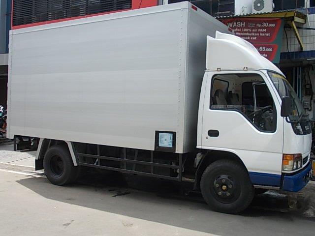
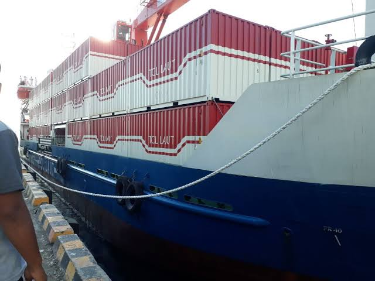

KirimIN mempunyai 2 layanan utama yaitu :
|  |  |
Ekspedisi Darat |
Ekspedisi Laut |
| KirimIN Cargo berdisi sejak 19 Oktober 2020, Sebagai tugas pemograman web 2020, KirimIN Cargo menyediakan pengiriman darat yang aman dengan harga yang lebih terjangkau, Sebagai pengiriman Cargo yang belum terlalu berpengalaman, Kirim IN Cargo tidak terlalu menjamin kecepatan dan ketepatan waktu. jika anda menginginkan pengiriman yang cepat, silahkan anda ambil sendiri barangnya dan terbang dengan baling baling bambu. | KirimIN Cargo juga menyediakan pengiriman via laut dengan menggunakan kapal ferri dengan tenaga dayung manual sehingga tidak memboroskan biaya dan salah satu sarana olahraga untuk ABK selainitu juga ketika kondisi air bagus dan bersahabat dengan lumba-lumba pengiriman bisa lebih cepat karena di bantu dorongan oleh kawanan lumba-lumba serta dorongan doa yang menantikan barang tentunya.seperti biasa jika pengirim barang menginginkan kecepatan yang lebih silahkan bisa langsung meminta bantuan ke Aquaman agar barang cepat sampai |
Yang dimana Layanan layanan tersebut memiliki harga masing masing diantaranya